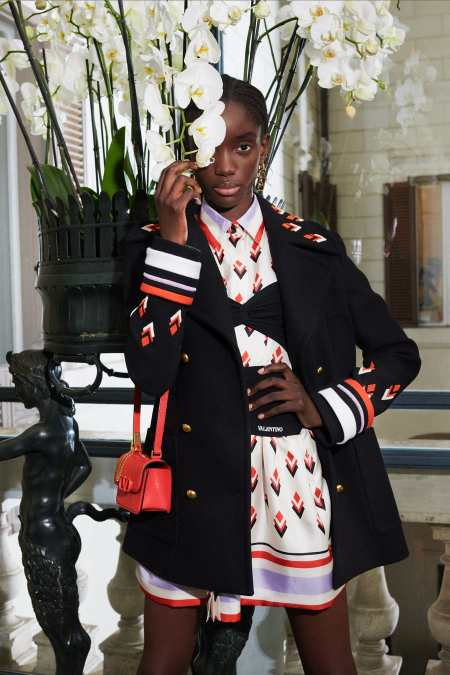
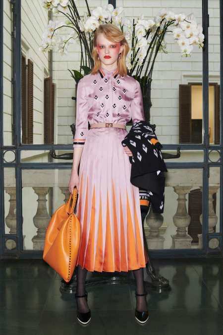
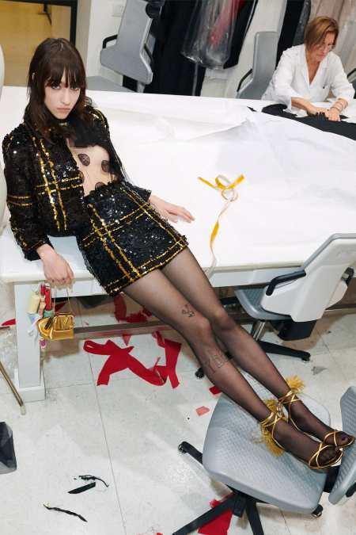
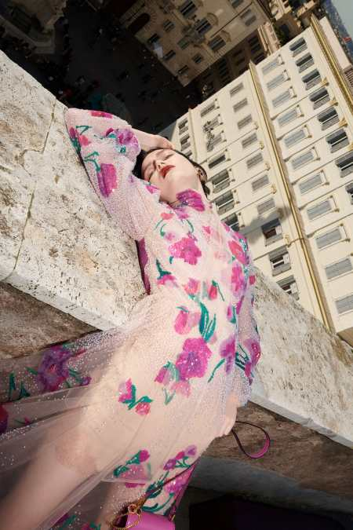

The Classic wardrobe of of Valentino pre-fall includes tailored musculine blazer, shirt dress embroidered with geometric motifs, pleated skirt embroidered the border line in lilac and orrange flat sequins, france cut sequins, rectangular laser cut sequins,. This bring glamour to a daywear collection.